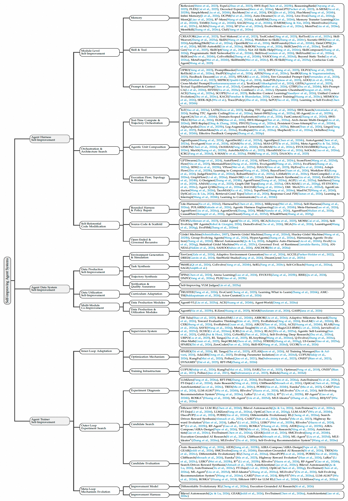

人工改进
这类智能体系统没有自主改进能力，系统以固定形式部署和运行，每次修改都需要由人开发与部署
关于自改进智能体系统的综述，研究智能体如何将经验、评估反馈与训练信号转化为对自身组件的持久更新
L1–L5 对相关工作的自改进能力进行分级
关键不只是智能体能否提出改进建议，而是它能否自主提出、实施、验证改进，并进一步改写未来的改进机制
| 等级 | 类别名称 | 自主提出改进 | 自主实施改进 | 自主验证改进 | 改进改进的机制 | 领域泛化性 |
|---|---|---|---|---|---|---|
| L1 | 人工改进 | |||||
| L2 | 辅助改进 | ✓ | ||||
| L3 | 固定机制的自改进 | ✓ | ✓ | ✓ | ||
| L4 | 受限域递归自改进 | ✓ | ✓ | ✓ | ✓ | |
| L5 | 通用递归自改进 | ✓ | ✓ | ✓ | ✓ | ✓ |
这类智能体系统没有自主改进能力，系统以固定形式部署和运行，每次修改都需要由人开发与部署
这类系统可以提出候选修改，但人类仍负责验证并实施修改，改进机制本身仍由人类维护
这类系统可以自主提出、应用并验证对运行组件的修改，例如基座模型、agent harness、数据系统或 trainer，但改进机制本身仍然固定或由外部维护
这类系统不仅可以提出、验证并应用候选修改，还可以重写自身的改进机制，使改进过程具备自指性，并支持在限定的领域内持续长期进步
L5 保留了 L4 的自主性、自指性和长期进步能力，同时能够把改进能力迁移到广泛且不断变化的任务领域，而不是局限于固定 benchmark 或受限的运行场景
从多维度筛选代表性论文
| 论文 | 组件 | 年份 | 级别 | 关注点 |
|---|---|---|---|---|
| 正在从 papers.yaml 加载论文… | ||||
一张图看清当前系统在改进什么

持续修改非参数化执行层，包括记忆、技能、工具、提示、工作流、编排与 scaffold 代码，从而改变智能体可观察什么、可调用什么以及如何组织目标导向的工作流
迭代改进数据生产与数据利用，包括环境生成、任务和轨迹合成、验证以及课程自适应，并依据验证结果和训练反馈生成更高质量的训练与评测数据
利用训练和评测结果持续修改数据如何转化为模型更新，包括监督设计、优化策略、训练基础设施以及 trainer 改进机制
研究系统级反馈循环，其中 harness、data 与 trainer 组件通过依赖关系协同改进，以应对演化中不断转移的系统瓶颈
迈向通用可靠 RSI Agent的开放问题
评测集应检验反复自我修改是否在不断变化的工作负载、目标、预算、工具和环境中提升可靠性、鲁棒性、实用性、能力保持以及改进过程本身
RSI 需要统一且智能体友好的表示来描述执行轨迹、训练记录、验证结果、版本历史和资源使用，使智能体能够观察、复现、比较并安全修改整个改进过程
关键挑战是让改进机制能够跨领域迁移，同时避免把只适用于特定任务的策略错误迁移到新场景
系统需要能力组件可修改，同时通过更严格验证、持续监控、回滚版本、安全警报、事故日志和人类审查来保护合规组件
危险场景需要智能体知道何时请求专家参与、选择合适交互方式、提供可解释证据，并把专家反馈转化为可复用改进资源
引用本综述，并参与维护
@article{202608.0051,
doi = {10.20944/preprints202608.0051.v1},
url = {https://www.preprints.org/manuscript/202608.0051},
year = 2026,
month = {August},
publisher = {Preprints},
author = {Shuaiqi Liu and Zhengkai Lin and Yuxiang Zhang and Yuanyi Ren and Yue Wu and Yongbin Li and Zheng Wang and Zhihang Fu and Jieping Ye},
title = {The Path to Recursive Self-Improving Agents: Foundation, Framework, and Future Directions},
journal = {Preprints}
}